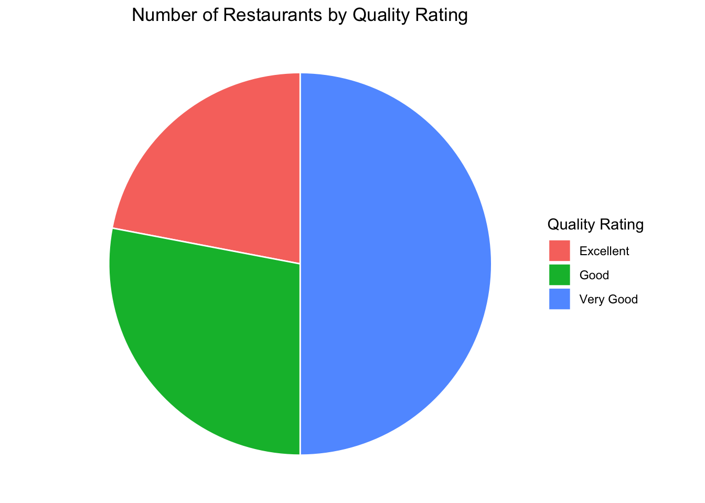
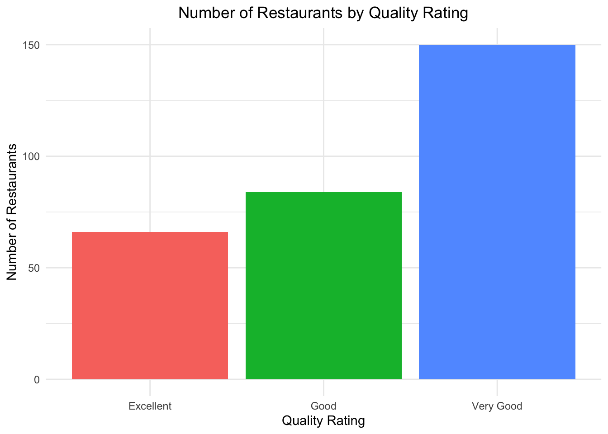

These are the core packages used in R to recreate some of the basic data visualization examples we explored, such as bar charts, pie charts, and pivot-style summaries. Each of these tools plays a specific role from data import and cleaning to aggregation and plotting.
While R provides a powerful and flexible framework for building reproducible and visualizations, it’s important to note the trade-offs in terms of efficiency and ease of use. For basic visual tasks, such as creating pie charts, bar graphs, or pivot tables, Excel is often faster and more intuitive, especially for users familiar with its drag-and-drop interface.
As a visualizations become more complex or need to be automated and repeated (e.g., across multiple datasets or time periods), R offers a more scalable and programmatic solution. The ability to script your workflow means you can quickly regenerate visuals without manually repeating steps: a major advantage over Excel for larger projects or reporting pipelines.
In short, Excel excels at speed and simplicity for one-off tasks, while R shines in flexibility, automation, and reproducibility for more advanced or recurring analysis and visualization tasks.
The following objects are masked from 'package:stats':
filter, lag
The following objects are masked from 'package:base':
intersect, setdiff, setequal, union
library(tidyr)library(ggplot2)
Warning: package 'ggplot2' was built under R version 4.3.3
Data Visualization
Import Data
Before beginning your data visualization work in R, it’s important to ensure that R can locate and access the data file you want to work with. This typically involves setting the correct file path.
In the code below, you’ll need to replace the example file path with the actual path to your file. (MUST DO!)
For example, if your file is located on your Desktop in a folder named “ExcelFiles”, and the file is named “restaurant.xlsx”, the full file path might look like:
On Windows:
"C:/Users/YourName/Desktop/ExcelFiles/restaurant.xlsx"
On Mac:
"/Users/YourName/Desktop/ExcelFiles/restaurant.xlsx"
Be sure to:
What I would recommend is right click option mac Use forward slashes / instead of backslashes in the file path
Check that the file name is spelled correctly and includes the .xlsx extension
Ensure the file is not open in Excel when R is trying to read it
Once you’ve set the correct file path, you can use the readxl package to import the data into R for analysis and visualization.
If the readxl package is not already installed on your computer, you’ll need to install it first using install.packages(“readxl”). After it’s installed, you load the package with library(readxl).
# Fix the below script to find file you downloaded from Lamaku#restaurants <- read_excel("~/Chapter 03/restaurant.xlsx")head(restaurants)
# A tibble: 6 × 4
Restaurant `Quality Rating` `Meal Price ($)` `Wait Time (min)`
<dbl> <chr> <dbl> <dbl>
1 1 Good 18 5
2 2 Very Good 22 6
3 3 Good 28 1
4 4 Excellent 38 74
5 5 Very Good 33 6
6 6 Good 28 5
Another Importing Data
Files (Bottom-Right):
Go through the folder path to where the data is and click on the data to reveal the import option.
Then the following screen will pop up.
Import the data and you will notice the code needed will run in the console. Which you can copy and paste for later or at least take note of because it will show you what the manual code should have looked at.
Graphs
Pie Graph
# Summarize number of restaurants by quality ratingrestaurant_counts <- restaurants %>%group_by(`Quality Rating`) %>%summarise(Count =n(), .groups ="drop")# Create pie chartggplot(restaurant_counts, aes(x ="", y = Count, fill =`Quality Rating`)) +geom_col(width =1, color ="white") +coord_polar(theta ="y") +theme_void() +# removes axes and backgroundlabs(title ="Number of Restaurants by Quality Rating",fill ="Quality Rating") +theme(plot.title =element_text(hjust =0.5))

Bar Graph
# Create bar plotggplot(restaurant_counts, aes(x =`Quality Rating`, y = Count, fill =`Quality Rating`)) +geom_bar(stat ="identity") +labs(title ="Number of Restaurants by Quality Rating",x ="Quality Rating",y ="Number of Restaurants" ) +theme_minimal() +theme(legend.position ="none", plot.title =element_text(hjust =0.5))

Tables
Pivot Table to Dplyr
This is what we created in Excel using pivot
# Step 1: Bin the Meal Price into $10 binsrestaurants_binned <- restaurants %>%mutate(PriceBin =cut(`Meal Price ($)`,breaks =seq(0, max(`Meal Price ($)`) +10, by =10),include.lowest =TRUE,right =FALSE# e.g., [10,20) ) )# Step 2: Count of restaurants by Quality Rating and Price Binpivot_table <- restaurants_binned %>%group_by(`Quality Rating`, PriceBin) %>%summarise(RestaurantCount =n(), .groups ="drop") %>%pivot_wider(names_from = PriceBin, values_from = RestaurantCount, values_fill =0)# View the resultprint(pivot_table, width =Inf)
# A tibble: 3 × 5
`Quality Rating` `[10,20)` `[20,30)` `[30,40)` `[40,50]`
<chr> <int> <int> <int> <int>
1 Excellent 2 14 28 22
2 Good 42 40 2 0
3 Very Good 34 64 46 6
Calculation in R
Median
median(restaurants$`Meal Price ($)`)
[1] 25
Mean
mean(restaurants$`Meal Price ($)`)
[1] 25.89667
Z-score
A z-score measures how many standard deviations a value is from the mean.
# Calculate z-scores for meal pricerestaurants$Meal_Z <-scale(restaurants$`Meal Price ($)`)head(restaurants$Meal_Z)
cor(restaurants$`Meal Price ($)`, restaurants$`Wait Time (min)`,)
[1] 0.4628228
Source Code
---title: "Spreadsheet Modeling"author: "LoweMackenzie"date: 2024-09-17format: html: code-fold: false # Enables dropdown for code code-tools: true # (Optional) Adds buttons like "Show Code" code-summary: "Show code" # (Optional) Custom label for dropdown toc: true toc-location: left page-layout: fulleditor: visual---## R PackagesThese are the core packages used in R to recreate some of the basic data visualization examples we explored, such as bar charts, pie charts, and pivot-style summaries. Each of these tools plays a specific role from data import and cleaning to aggregation and plotting.While R provides a powerful and flexible framework for building reproducible and visualizations, it's important to note the trade-offs in terms of efficiency and ease of use. For basic visual tasks, such as creating pie charts, bar graphs, or pivot tables, Excel is often faster and more intuitive, especially for users familiar with its drag-and-drop interface.As a visualizations become more complex or need to be automated and repeated (e.g., across multiple datasets or time periods), R offers a more scalable and programmatic solution. The ability to script your workflow means you can quickly regenerate visuals without manually repeating steps: a major advantage over Excel for larger projects or reporting pipelines.In short, Excel excels at speed and simplicity for one-off tasks, while R shines in flexibility, automation, and reproducibility for more advanced or recurring analysis and visualization tasks.```{r}#install.packages("ggplot2")#install.packages("dplyr")#install.packages("tidyr")#install.packages("readxl")library(readxl)library(dplyr)library(tidyr)library(ggplot2)```# Data Visualization## Import DataBefore beginning your data visualization work in R, it's important to ensure that R can locate and access the data file you want to work with. This typically involves setting the correct file path.In the code below, you'll need to replace the example file path with the actual path to your file. (MUST DO!)For example, if your file is located on your Desktop in a folder named "ExcelFiles", and the file is named "restaurant.xlsx", the full file path might look like:``` On Windows:"C:/Users/YourName/Desktop/ExcelFiles/restaurant.xlsx"`````` On Mac:"/Users/YourName/Desktop/ExcelFiles/restaurant.xlsx"```Be sure to:What I would recommend is right click *option mac* Use forward slashes / instead of backslashes in the file pathCheck that the file name is spelled correctly and includes the .xlsx extensionEnsure the file is not open in Excel when R is trying to read itOnce you've set the correct file path, you can use the readxl package to import the data into R for analysis and visualization.If the readxl package is not already installed on your computer, you'll need to install it first using install.packages("readxl"). After it's installed, you load the package with library(readxl).```{r include=FALSE}restaurants <-read_excel("/Users/ashleylowe/Desktop/SpreadsheetModeling429/ExcelFiles_BusinessAnalytics/Chapter 03/restaurant.xlsx")``````{r}# Fix the below script to find file you downloaded from Lamaku#restaurants <- read_excel("~/Chapter 03/restaurant.xlsx")head(restaurants)```## Another Importing Data **Files (Bottom-Right):**Go through the folder path to where the data is and click on the data to reveal the import option.Then the following screen will pop up.Import the data and you will notice the code needed will run in the console. Which you can copy and paste for later or at least take note of because it will show you what the manual code should have looked at.## Graphs### Pie Graph```{r}# Summarize number of restaurants by quality ratingrestaurant_counts <- restaurants %>%group_by(`Quality Rating`) %>%summarise(Count =n(), .groups ="drop")# Create pie chartggplot(restaurant_counts, aes(x ="", y = Count, fill =`Quality Rating`)) +geom_col(width =1, color ="white") +coord_polar(theta ="y") +theme_void() +# removes axes and backgroundlabs(title ="Number of Restaurants by Quality Rating",fill ="Quality Rating") +theme(plot.title =element_text(hjust =0.5))```### Bar Graph```{r}# Create bar plotggplot(restaurant_counts, aes(x =`Quality Rating`, y = Count, fill =`Quality Rating`)) +geom_bar(stat ="identity") +labs(title ="Number of Restaurants by Quality Rating",x ="Quality Rating",y ="Number of Restaurants" ) +theme_minimal() +theme(legend.position ="none", plot.title =element_text(hjust =0.5))```## Tables### Pivot Table to DplyrThis is what we created in Excel using pivot```{r}# Step 1: Bin the Meal Price into $10 binsrestaurants_binned <- restaurants %>%mutate(PriceBin =cut(`Meal Price ($)`,breaks =seq(0, max(`Meal Price ($)`) +10, by =10),include.lowest =TRUE,right =FALSE# e.g., [10,20) ) )# Step 2: Count of restaurants by Quality Rating and Price Binpivot_table <- restaurants_binned %>%group_by(`Quality Rating`, PriceBin) %>%summarise(RestaurantCount =n(), .groups ="drop") %>%pivot_wider(names_from = PriceBin, values_from = RestaurantCount, values_fill =0)# View the resultprint(pivot_table, width =Inf)```# Calculation in R## Median```{r}median(restaurants$`Meal Price ($)`)```## Mean```{r}mean(restaurants$`Meal Price ($)`)```## Z-scoreA z-score measures how many standard deviations a value is from the mean.```{r}# Calculate z-scores for meal pricerestaurants$Meal_Z <-scale(restaurants$`Meal Price ($)`)head(restaurants$Meal_Z)```## Percentile```{r}# 90th percentile of meal pricequantile(restaurants$`Meal Price ($)`, probs =0.90)```## Quantile```{r}# 90th percentile of meal pricequantile(restaurants$`Meal Price ($)`, probs =c(0, 0.25, 0.5, 0.75, 1))```## Correlation```{r}cor(restaurants$`Meal Price ($)`, restaurants$`Wait Time (min)`,)```